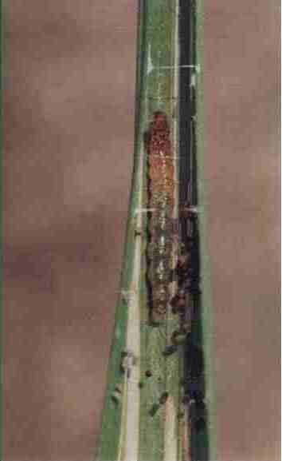

稻纵卷叶螟
害虫名称：稻纵卷叶螟
分类地位：鳞翅目螟蛾科
分布范围：南方稻田
为害特点：初孵幼虫取食心叶，出现针头状小点，随虫龄增大，吐丝缀稻叶两边叶缘，纵卷叶片成圆筒状虫苞,幼虫藏身其内啃食叶肉，留下表皮呈白色条斑。为水稻主要害虫，还为害麦子、玉米、谷子、红薯等作物及草。
形态特征：成虫长7－9毫米，淡黄褐色，前翅有2条褐色横线，两线间有1条短线，外缘有一暗色宽带；后翅有两条横线，外缘也有宽带。卵约1毫米，椭圆形，初产白色透明，近孵化时淡黄色。幼虫老熟时长14―19毫米，低龄幼虫绿色，后转黄绿色，成熟幼虫红色。蛹长7―10毫米，初黄色后转褐色，长圆筒形。
稻纵卷叶螟幼虫
 稻纵卷叶螟成虫
稻纵卷叶螟成虫
 稻纵卷叶螟为害状
稻纵卷叶螟为害状
发病规律：稻纵卷叶螟属远距离迁飞性害虫，在河南省不能越冬，每年6―7月份成虫从南方迁入。在河南省1年发生3－4代，以第二代为害最重。成虫有趋光性，栖息趋荫蔽性和产卵趋嫩性，适温高湿产卵量大，卵多单产，也有2－5粒产于一起。初孵幼虫多钻人心叶为害，2龄后则在叶上结苞为害。幼虫老熟后离开虫苞在稻丛基部黄叶及无效分蘖上结茧化蛹。多雨日及多露水的高湿天气有利于稻纵卷叶螟猖獗发生。
防治方法：1．农业措施 选用抗虫高产良种，合理施肥，适时烤晒田，降低田间湿度，防止稻株前期猛发嫩绿，后期贪青晚熟，可减轻受害程度。2．药剂防治 每666.7平方米用50％杀螟松乳油50毫升，或50％甲胺磷乳油50毫升，或90％晶体敌百虫100克加水50千克喷雾.或用18%杀虫双水剂150毫升加B.t乳剂150－200毫升加水50千克喷雾。